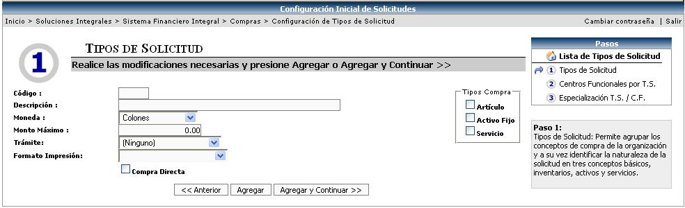
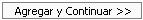
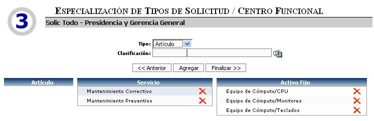
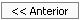
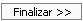

En este catálogo se crean y se agrupan los diferentes tipos de solicitud de compra que maneja la empresa. Además determina los tipos de compra (artículos, servicios, activos fijos) a los que puede estar asociado dicho tipo de solicitud.
A su vez relaciona que centros funcionales pueden hacer uso de ese tipo de solicitud y la especializa por el tipo de compra que se le asigno, o sea establece que cosas son las que puede comprar.
Se deben de seguir tres pasos para la creación de los Tipos de Solicitud:
• Crear el Tipo de Solicitud
• Asociar los Centros Funcionales
• Especializar cada Centro Funcional.
1.1 Crear el Tipo de Solicitud:
En esta pantalla se debe de llenar cierta información básica para agrupar los conceptos de compra que tenga la empresa. Se debe de crear un código y una descripción. Definir que tipo de trámite de aprobación va a tener ese tipo de solicitud y que formato de impresión va a tener. A su vez se le tiene que especificar que Tipos de Compra (artículos, servicios o activos fijos) va permitir.
Las opciones de formatos que aparecen
en la lista del combo: Formato de Impresión,
se crean en el módulo Administración del Sistema,
en la opción Formatos de Impresión,
donde se tiene que especificar una serie de
características para poder crear el formato.


En la siguiente pantalla si se activa el check “Compra Directa”, cuando se aplique la solicitud de compra, el sistema automáticamente creará la Orden de Compra para esa solicitud, esto en el momento en que la cadena de autorización haya sido ejecutada.

Para continuar con el siguiente paso y guardar
la información, se debe de presionar el botón de 
1.2 Asociar los Centros Funcionales:
Aquí se define el “quien” puede trabajar con ese tipo de solicitud específico. Ese “quien”, no se refiere a personas específicas, sino más bien a los centros funcionales o departamentos en los que se divide la empresa.
Se debe se seleccionar el (los) centro (s) a asociar, la moneda de dicha solicitud por centro y el monto máximo autorizado para una compra. Si este campo se deja con monto igual a cero, el sistema lo tomará como un monto ilimitado o sea no tendrá restricciones. Este campo sirve para definir el monto máximo autorizado que tiene asociado cada centro funcional para cuando quiera tramitar una solicitud de compra.

El botón de  incluye la (s) línea (s) de los centros funcionales.
incluye la (s) línea (s) de los centros funcionales.
Para continuar con el siguiente paso y guardar
la información, se debe de seleccionar un centro funcional y luego presionar
el botón de 
1.3 Especializar cada Centro Funcional:
Una vez que se escogió el centro funcional que se va a especializar, se debe de especificar el tipo de compra. Si el tipo de compra es igual a Artículo o a Servicio se debe de asociar una clasificación. Pero si el tipo de compra es Activo Fijo, se debe de asociar una categoría y una clasificación.

A nivel de ejemplo podemos analizar la imagen presentada seguidamente, la cual muestra la siguiente información:

“Para la solicitud Compra de Artículos, AF y Servicios, para el centro funcional Producción
se puede comprar: En Artículos, cualquiera (ya que no se le especificó ninguna especialización);
en Servicios solamente Mantenimiento correctivo y Mantenimiento Preventivo; en Activo Fijo
solamente Equipo de Cómputo (CPU o Monitores o Teclados)”
Si se quiere especializar otro centro
funcional se debe de presionar el botón  y así con cada uno de los centros para los cuales
se desea puedan realizar compras de este tipo de solicitudes, e indicando
si se desea o no alguna tipo de especialización en particular
y así con cada uno de los centros para los cuales
se desea puedan realizar compras de este tipo de solicitudes, e indicando
si se desea o no alguna tipo de especialización en particular
Para finalizar la creación del Tipo de
Solicitud se debe de presionar el botón 